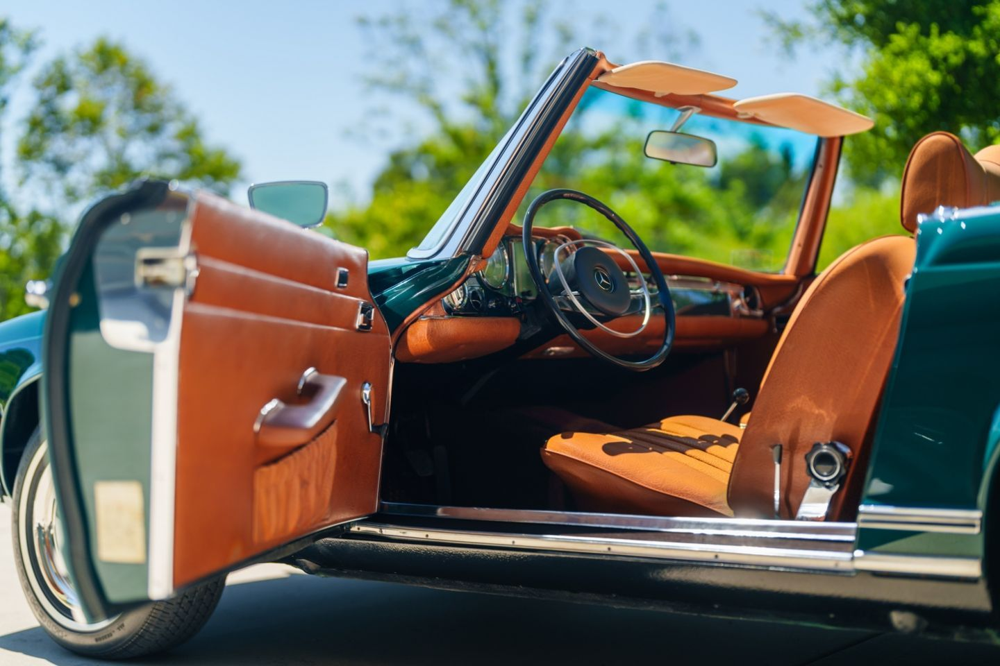

The Mercedes-Benz 280SL is a classic car that embodies the epitome of luxury, style, and performance. Introduced in the late 1960s, it quickly became an icon of automotive design and engineering excellence. With its elegant lines, refined proportions, and understated yet sophisticated styling, the 280SL exudes timeless charm and grace. Whether cruising along coastal roads or navigating bustling city streets, it commands attention with its classic Mercedes-Benz presence.

Under the hood, the 280SL typically featured a robust inline-six engine, delivering smooth and effortless performance that effortlessly combines power with refinement. Its responsive handling and balanced chassis make it a joy to drive, offering a driving experience that is both engaging and comfortable. Inside, the 280SL offers a luxurious and well-appointed cabin, featuring high-quality materials, ergonomic design, and thoughtful amenities. From supple leather seats to polished wood trim, every detail reflects Mercedes-Benz's commitment to craftsmanship and comfort.
Renowned for its durability and reliability, the 280SL has earned a reputation as a true classic that stands the test of time. Whether as a weekend cruiser or a showpiece at automotive events, it continues to capture the hearts of enthusiasts around the world, serving as a testament to Mercedes-Benz's legacy of excellence in automotive engineering.